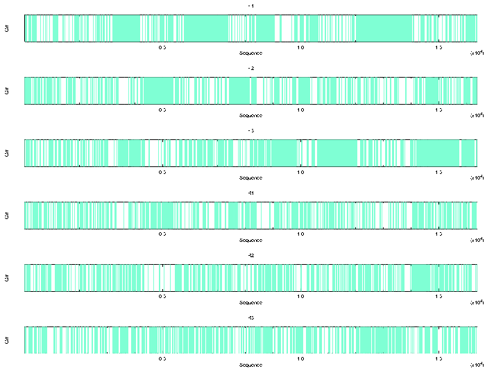

|
|
plotorf |
plotorf plots potential open reading frames (ORFs) for an input nucleotide sequence. ORFs in this program are defined as being regions between the specified START and STOP codons. A graphical representation of where the open reading frames are in all 6 reading frames is shown. The ORFs are displayed as blue boxes.
ORFs in this program are defined as being regions between START and STOP codons. The default START codon is: ATG. The default STOP codons are: TAA,TAG,TGA. You can specify your own set of start and stop codons using the -start and -stop qualifiers.
% plotorf Plot potential open reading frames in a nucleotide sequence Input nucleotide sequence: tembl:x13776 Graph type [x11]: cps Created plotorf.ps |
Go to the input files for this example
Go to the output files for this example
Example 2
An example of specifying your own START and STOP codons with a mitochondrial sequence would be:
% plotorf -start ATT,ATC,ATA,ATG,GTG -stop TAA,TAG,AGA,AGG Plot potential open reading frames in a nucleotide sequence Input nucleotide sequence: mito.seq Graph type [x11]: cps Created plotorf.ps |
Go to the input files for this example
Go to the output files for this example
Standard (Mandatory) qualifiers:
[-sequence] sequence Nucleotide sequence filename and optional
format, or reference (input USA)
-graph xygraph [$EMBOSS_GRAPHICS value, or x11] Graph type
(ps, hpgl, hp7470, hp7580, meta, cps, x11,
tekt, tek, none, data, xterm, png, gif)
Additional (Optional) qualifiers: (none)
Advanced (Unprompted) qualifiers:
-start string [ATG] Start codons (Any string is accepted)
-stop string [TAA,TAG,TGA] Stop codons (Any string is
accepted)
Associated qualifiers:
"-sequence" associated qualifiers
-sbegin1 integer Start of the sequence to be used
-send1 integer End of the sequence to be used
-sreverse1 boolean Reverse (if DNA)
-sask1 boolean Ask for begin/end/reverse
-snucleotide1 boolean Sequence is nucleotide
-sprotein1 boolean Sequence is protein
-slower1 boolean Make lower case
-supper1 boolean Make upper case
-sformat1 string Input sequence format
-sdbname1 string Database name
-sid1 string Entryname
-ufo1 string UFO features
-fformat1 string Features format
-fopenfile1 string Features file name
"-graph" associated qualifiers
-gprompt boolean Graph prompting
-gdesc string Graph description
-gtitle string Graph title
-gsubtitle string Graph subtitle
-gxtitle string Graph x axis title
-gytitle string Graph y axis title
-goutfile string Output file for non interactive displays
-gdirectory string Output directory
General qualifiers:
-auto boolean Turn off prompts
-stdout boolean Write first file to standard output
-filter boolean Read first file from standard input, write
first file to standard output
-options boolean Prompt for standard and additional values
-debug boolean Write debug output to program.dbg
-verbose boolean Report some/full command line options
-help boolean Report command line options. More
information on associated and general
qualifiers can be found with -help -verbose
-warning boolean Report warnings
-error boolean Report errors
-fatal boolean Report fatal errors
-die boolean Report dying program messages
|
| Standard (Mandatory) qualifiers | Allowed values | Default | |
|---|---|---|---|
| [-sequence] (Parameter 1) |
Nucleotide sequence filename and optional format, or reference (input USA) | Readable sequence | Required |
| -graph | Graph type | EMBOSS has a list of known devices, including ps, hpgl, hp7470, hp7580, meta, cps, x11, tekt, tek, none, data, xterm, png, gif | EMBOSS_GRAPHICS value, or x11 |
| Additional (Optional) qualifiers | Allowed values | Default | |
| (none) | |||
| Advanced (Unprompted) qualifiers | Allowed values | Default | |
| -start | Start codons | Any string is accepted | ATG |
| -stop | Stop codons | Any string is accepted | TAA,TAG,TGA |
ID X13776; SV 1; linear; genomic DNA; STD; PRO; 2167 BP.
XX
AC X13776; M43175;
XX
DT 19-APR-1989 (Rel. 19, Created)
DT 14-NOV-2006 (Rel. 89, Last updated, Version 24)
XX
DE Pseudomonas aeruginosa amiC and amiR gene for aliphatic amidase regulation
XX
KW aliphatic amidase regulator; amiC gene; amiR gene.
XX
OS Pseudomonas aeruginosa
OC Bacteria; Proteobacteria; Gammaproteobacteria; Pseudomonadales;
OC Pseudomonadaceae; Pseudomonas.
XX
RN [1]
RP 1167-2167
RA Rice P.M.;
RT ;
RL Submitted (16-DEC-1988) to the EMBL/GenBank/DDBJ databases.
RL Rice P.M., EMBL, Postfach 10-2209, Meyerhofstrasse 1, 6900 Heidelberg, FRG.
XX
RN [2]
RP 1167-2167
RX DOI; 10.1016/0014-5793(89)80249-2.
RX PUBMED; 2495988.
RA Lowe N., Rice P.M., Drew R.E.;
RT "Nucleotide sequence of the aliphatic amidase regulator gene of Pseudomonas
RT aeruginosa";
RL FEBS Lett. 246(1-2):39-43(1989).
XX
RN [3]
RP 1-1292
RX PUBMED; 1907262.
RA Wilson S., Drew R.;
RT "Cloning and DNA seqence of amiC, a new gene regulating expression of the
RT Pseudomonas aeruginosa aliphatic amidase, and purification of the amiC
RT product.";
RL J. Bacteriol. 173(16):4914-4921(1991).
XX
RN [4]
RP 1-2167
RA Rice P.M.;
RT ;
RL Submitted (04-SEP-1991) to the EMBL/GenBank/DDBJ databases.
RL Rice P.M., EMBL, Postfach 10-2209, Meyerhofstrasse 1, 6900 Heidelberg, FRG.
XX
DR GOA; Q51417.
DR UniProtKB/Swiss-Prot; Q51417; AMIS_PSEAE.
XX
[Part of this file has been deleted for brevity]
FT /replace=""
FT /note="ClaI fragment deleted in pSW36, constitutive
FT phenotype"
FT misc_feature 1
FT /note="last base of an XhoI site"
FT misc_feature 648..653
FT /note="end of 658bp XhoI fragment, deletion in pSW3 causes
FT constitutive expression of amiE"
FT conflict 1281
FT /replace="g"
FT /citation=[3]
XX
SQ Sequence 2167 BP; 363 A; 712 C; 730 G; 362 T; 0 other;
ggtaccgctg gccgagcatc tgctcgatca ccaccagccg ggcgacggga actgcacgat 60
ctacctggcg agcctggagc acgagcgggt tcgcttcgta cggcgctgag cgacagtcac 120
aggagaggaa acggatggga tcgcaccagg agcggccgct gatcggcctg ctgttctccg 180
aaaccggcgt caccgccgat atcgagcgct cgcacgcgta tggcgcattg ctcgcggtcg 240
agcaactgaa ccgcgagggc ggcgtcggcg gtcgcccgat cgaaacgctg tcccaggacc 300
ccggcggcga cccggaccgc tatcggctgt gcgccgagga cttcattcgc aaccgggggg 360
tacggttcct cgtgggctgc tacatgtcgc acacgcgcaa ggcggtgatg ccggtggtcg 420
agcgcgccga cgcgctgctc tgctacccga ccccctacga gggcttcgag tattcgccga 480
acatcgtcta cggcggtccg gcgccgaacc agaacagtgc gccgctggcg gcgtacctga 540
ttcgccacta cggcgagcgg gtggtgttca tcggctcgga ctacatctat ccgcgggaaa 600
gcaaccatgt gatgcgccac ctgtatcgcc agcacggcgg cacggtgctc gaggaaatct 660
acattccgct gtatccctcc gacgacgact tgcagcgcgc cgtcgagcgc atctaccagg 720
cgcgcgccga cgtggtcttc tccaccgtgg tgggcaccgg caccgccgag ctgtatcgcg 780
ccatcgcccg tcgctacggc gacggcaggc ggccgccgat cgccagcctg accaccagcg 840
aggcggaggt ggcgaagatg gagagtgacg tggcagaggg gcaggtggtg gtcgcgcctt 900
acttctccag catcgatacg cccgccagcc gggccttcgt ccaggcctgc catggtttct 960
tcccggagaa cgcgaccatc accgcctggg ccgaggcggc ctactggcag accttgttgc 1020
tcggccgcgc cgcgcaggcc gcaggcaact ggcgggtgga agacgtgcag cggcacctgt 1080
acgacatcga catcgacgcg ccacaggggc cggtccgggt ggagcgccag aacaaccaca 1140
gccgcctgtc ttcgcgcatc gcggaaatcg atgcgcgcgg cgtgttccag gtccgctggc 1200
agtcgcccga accgattcgc cccgaccctt atgtcgtcgt gcataacctc gacgactggt 1260
ccgccagcat gggcggggga ccgctcccat gagcgccaac tcgctgctcg gcagcctgcg 1320
cgagttgcag gtgctggtcc tcaacccgcc gggggaggtc agcgacgccc tggtcttgca 1380
gctgatccgc atcggttgtt cggtgcgcca gtgctggccg ccgccggaag ccttcgacgt 1440
gccggtggac gtggtcttca ccagcatttt ccagaatggc caccacgacg agatcgctgc 1500
gctgctcgcc gccgggactc cgcgcactac cctggtggcg ctggtggagt acgaaagccc 1560
cgcggtgctc tcgcagatca tcgagctgga gtgccacggc gtgatcaccc agccgctcga 1620
tgcccaccgg gtgctgcctg tgctggtatc ggcgcggcgc atcagcgagg aaatggcgaa 1680
gctgaagcag aagaccgagc agctccagga ccgcatcgcc ggccaggccc ggatcaacca 1740
ggccaaggtg ttgctgatgc agcgccatgg ctgggacgag cgcgaggcgc accagcacct 1800
gtcgcgggaa gcgatgaagc ggcgcgagcc gatcctgaag atcgctcagg agttgctggg 1860
aaacgagccg tccgcctgag cgatccgggc cgaccagaac aataacaaga ggggtatcgt 1920
catcatgctg ggactggttc tgctgtacgt tggcgcggtg ctgtttctca atgccgtctg 1980
gttgctgggc aagatcagcg gtcgggaggt ggcggtgatc aacttcctgg tcggcgtgct 2040
gagcgcctgc gtcgcgttct acctgatctt ttccgcagca gccgggcagg gctcgctgaa 2100
ggccggagcg ctgaccctgc tattcgcttt tacctatctg tgggtggccg ccaaccagtt 2160
cctcgag 2167
//
|
>gi|5819095|ref|NC_001321.1| Balaenoptera physalus mitochondrion, complete genome GTTAATTACTAATCAGCCCATGATCATAACATAACTGAGGTTTCATACATTTGGTATTTTTTTATTTTTTTTGGGGGGCT TGCACGGACTCCCCTATGACCCTAAAGGGTCTCGTCGCAGTCAGATAAATTGTAGCTGGGCCTGGATGTATTTGTTATTT GACTAGCACAACCAACATGTGCAGTTAAATTAATGGTTACAGGACATAGTACTCCACTATTCCCCCCGGGCTCAAAAAAC TGTATGTCTTAGAGGACCAAACCCCCCTCCTTCCATACAATACTAACCCTCTGCTTAGATATTCACCACCCCCCTAGACA GGCTCGTCCCTAGATTTAAAAGCCATTTTATTTATAAATCAATACTAAATCTGACACAAGCCCAATAATGAAAATACATG AACGCCATCCCTATCCAATACGTTGATGTAGCTTAAACACTTACAAAGCAAGACACTGAAAATGTCTAGATGGGTCTAGC CAACCCCATTGACATTAAAGGTTTGGTCCCAGCCTTTCTATTAGTTCTTAACAGACTTACACATGCAAGTATCCACATCC CAGTGAGAACGCCCTCTAAATCATAAAGATTAAAAGGAGCGGGTATCAAGCACGCTAGCACTAGCAGCTCACAACGCCTC GCTTAGCCACGCCCCCACGGGACACAGCAGTGATAAAAATTAAGCTATAAACGAAAGTTCGACTAAGTCATGTTAATTTA AGGGTTGGTAAACTTCGTGCCAGCCACCGCGGTCATACGATCGACCCAAATTAATAGAAGCACGGCGTAAAGAGTGTTAA GGAGCCACATGAAATAAAGTCAAACCTTAATTAAGCTGTAAAAAGCCCTAATTAAAATTAAGCCAAACTACGAAAGTGAC TTTAATATAATCTGATCACACGACAGCTAAGATCCAAACTGGGATTAGATACCCCACTATGCTTAGTCGTAAACCCCAAT AGTCACAAAACAAGACTATTCGCCAGAGTACTACTAGCAACAGCCTAAAACTCAAAGGACTTGGCGGTGCCTCATACCCA TCTAGAGGAGCCTGTTCTGTAACCGATAAACCCCGATCAACCTCACCAACCCTTGCTACTTCAGTCTATATACCGCCATC TTCAGCAAACCCTAAAGGGAGAAAAGTAAGCATAACCATCCTACATAAAAACGTTAGGTCAAGGTGTAACCCATGGGTTG GGAAGTAATGGGCTACATTTTCTAAGCTAAGAACATCCCCTATACTCACACGAAAGTTTTTATGAAACTTAAAAACTAAA GGAGGATTTAGTAGTAAATCAAGAGCAGAGTGCTTGATTGAATAAGGCCATGAGGGCACGCACACACCGCCCGTCACCCT CCTCAAGTACCCCAGCTATAAACCCCAGTTCGTTAACTCAGGCCAAGCAATTATACGAGAGGAGACAAGTCGTAACAAGG TAAGCATACCGGAAGGTGTGCTTGGACAAAACAAGATATAGCTTAAACAAAGCATGTAGTTTACACCTAGAAGATTCCAC AGCCCGTGTATATCTTGAACTAGCCCTAGCCCACACCCTCCCCACCTCTACTACCACAAATCAATCAAATAAAACATTTA CCATCCCTTCAAAGTATAGGAGATAGAAATTTAAATATCAGTGGCGCTATAGAGATAGTACCGTAAGGAAAGATGAAAGA AAAACCTAAAAGTAATAAAAAGCAAAGCTTACCACTTGTACCTTTTGCATAATGACTTAACTAGTAATAAATTAGCAAAG AGACCTTAAGTTAAATTACCCGAAACCAGACGAGCTACTTATGAGCAGCACCTAGAACGAACTCATCTATGTGGCAAAAT AGTGAGAAGACTTATAAGTAGAGGTGAAAAGCCTAACGAGCCTGGTGATAGCTGGTTGTCCCTGAAAAGAATCTCAGTTC AACATTAAATAATACTAAAAGCCCATGCCAAGCCTTAACGTATATTTAACTGTTAATCTAAAAAGGTACAGCTTTTTAGA AATGGGTACAACCTTGACTAGAGAGTAAAATCAAACATAAACATAGTTGGCCTAAAAGCAGCCATCAATTAAGAAAGCGT TCAAGCTCGACAACAAAATAATGTTTTAATTCCAACATTAAGTAAATCAACTCCTAGCCTGACTATTGGACTAATCTATA CAAATATAGAAGCAATACTGTTAATATGAGTAACAAGAAATTTTTCTCCTAGCACAAGCTTACACCAGTAACTGATAATA TACTGATAATTAACAGCAAATAAATAAAACCCAACACTAAATTATTTATTAAAATACTGTTAACCCAACACAGGCGTGCA TTAAGGAAAGATTAAAAAAAGTAAAAGGAACTCGGCAAACACAAACCCCGCCTGTTTACCAAAAACATCACCTCTAGCAT AACCAGTATTAGAGCACTGCCTGCCCGGTGACTAATCGTTAAACGGCCGCGGTATCCTGACCGTGCAAAGGTAGCATAAT CACTTGTTCTCTAATTAGGGACTTGTATGAATGGCCACACGAGGGTTTTACTGTCTCTTACTTTTAATCAGTGAAATTGA CCTCTCCGTGAAGAGGCGGAGATAACAAAATAAGACGAGAAGACCCTATGGAGCTTCAATTAATCAACCCAAAAACCATA ACCTTAAACCACCAAGGGATAACAAAACCTTATATGGGCTGACAATTTCGGTTGGGGTGACCTCGGAGTACAAAAAACCC TCCGAGTGATTAAAACTTAGGCCCACTAGCCAAAGTACAATATCACTTATTGATCCAATCCTTTGATCAACGGAACAAGT TACCCTAGGGATAACAGCGCAATCCTATTCTAGAGTCCATATCGACAATAGGGTTTACGACCTCGATGTTGGATCAGGAC ATCCTAATGGTGCAGCTGCTATTAAGGGTTCGTTTGTTCAACGATTAAAGTCCTACGTGATCTGAGTTCAGACCGGAGTA ATCCAGGTCGGTTTCTATCTATTACGCATTTCTCCCAGTACGAAAGGACAAGAGAAATAAGGCCAACTTCAAACAAGCGC CTTCAAACAATTAATGACCTAGTCTCAACTTAATAATTAAGCGCAAACAAACCTGCCCAAGACCAGGGCCTTGTTGAGGT GGCAGAGTTCGGTAATTGCATAAAACTTAAACTTTTACACCCAGAGGTTCAAATCCTCTCCCCAACAAAATGTTTATAAT TAACATTCTAACACTCATTCTCCCCATCCTCCTAGCCGTAGCATTCCTAACGCTAGTAGAACGCAAAATTCTAGGCTATA TGCAGTTCCGAAAGGGGCCAAACATCGTAGGCCCACATGGCTTACTCCAACCCTTTGCCGATGCAATTAAATTATTCACT AAAGAACCCCTACGGCCAGCTACATCCTCAACTACTATGTTTATCATTGCACCAGTACTAGCCCTAACCCTGGCCCTCAC TATATGAAGCCCCCTACCCATACCATACCCCCTCATTAACATAAACCTAGGAGTATTATTCATATTAGCAATATCCAGCC TAGCCGTCTACTCCATCCTATGATCAGGCTGAGCCTCCAACTCAAAATACGCACTAATTGGAGCCCTACGAGCAGTAGCA CAAACAATCTCATATGAGGTAACACTAGCCATTATCCTCCTATCAGTACTCCTAATAAACGGCTCCTACACCTTATCAAC ATTAGCCACAACACAAGAACAACTATGATTACTATTCCCATCATGACCCTTAGCCATAATGTGATTCATCTCCACCCTAG CAGAAACTAATCGAGCTCCTTTTGATCTAACAGAGGGAGAATCAGAACTCGTATCAGGCTTCAACGTAGAATATGCAGCA GGCCCTTTCGCCCTATTCTTCCTGGCAGAATACGCCAACATCATTATAATGAATATACTCACAGCCATTTTATTCCTAGG [Part of this file has been deleted for brevity] CATTGTCTTCTGCGCCTTCATCACTAGTCTAGTTCCCGCAATAGTATATCTTCACACAAACCAAGAAACACTCATCTCAA ACTGACACTGAATCACAATCCAAACCCTCAAACTAACACTTAGCTTTAAAATAGATTACTTTTCACTTATATTTATACCA GTAGCACTATTCATTACATGATCCATCATAGAATTCTCAATATGATATATGCACTCCGACCCCTACATCAACCAATTTTT TAAATACTTACTCCTCTTCCTCATCACCATACTAATCCTTGTTACAGCTAACAATCTCTTCCAACTTTTCATCGGATGAG AAGGAGTAGGAATTATATCCTTCTTACTAATTGGCTGATGATTCGGACGAACAGATGCAAATACAGCCGCCCTCCAAGCA ATCCTATACAATCGTATCGGAGACATTGGACTCCTTGCATCAATAGCATGATTTCTCTCTAATATAAACACATGAGACCT AGAACAAATCTTTATACTCAACCAAAACCCCTTAAATTTCCCCCTCATAGGACTCGTACTAGCCGCAGCAGGAAAATCGG CTCAATTCGGACTCCACCCTTGACTCCCATCAGCAATAGAAGGTCCTACCCCAGTCTCAGCCCTACTCCACTCAAGCACA ATAGTTGTAGCAGGAATCTTCTTGCTTGTCCGCTTCTACCCATTAATAGAAAATAACAAGCTAATCCAAACAGTAACCCT CTGCTTAGGCGCTATCACAACTCTATTTACAGCCATCTGTGCCCTCACCCAAAACGACATCAAAAAAATTATTGCTTTCT CCACCTCCAGCCAGCTAGGCCTAATAATAGTAACAATCGGCCTTAACCAACCTTACCTAGCATTCCTACACATTTGCACA CACGCCTTCTTTAAAGCTATACTATTCCTATGTTCTGGCTCCATCATCCATAACCTAAACAACGAACAAGATATCCGAAA AATAGGAGGGCTATTTAAGGCCCTCCCATTCACCACAACCGCCCTTATCATCGGATGTCTTGCACTAACAGGAATGCCAT TCCTGACCGGATTCTACTCCAAAGATCCCATTATTGAAGCCGCCACTTCGTCTTATACCAACGCCTGAGCCCTATTACTG ACCTTAATCGCCACCTCCCTTACGGCCGTCTATAGCACCCGCATCATTTTCTTTGCACTACTAGGACAACCCCGCTTCCC TCCCTCCACAACCATTAACGAAAATAATCCACTGTTAATCAACCCTATCAAACGACTACTCGTCGGAAGTATCTTCGCTG GCTTCATCCTATCCAACAGTATTCCCCCAATAACTACACCTTTAATAACCATACCCCTGCACTTAAAATTAACCGCCCTT GCAATAACAACCCTAGGCTTCATCATCGCATTCGAAATTAACCTTGACACACAAAATCTAAAGCACAAGCACCCATCAAA CTCCTTTAAATTCTCCACCTTACTAGGTTATTTCCCCACAATCATACATCGCCTACCCCCTCACCTTGACCTGTTAATAA GCCAAAAACTAGCAACTTCCCTACTAGATCTAACTTGACTAGAAACTATTTTACCAAAAACCACAGCCCTTATCCAACTA AAAGCCTCTACACTAACCTCTAACCAACAAGGCCTCATCAAACTCTACTTCTTATCTTTCCTCATCACCATCACCCTCAG CATAATCTTATTTAACTACCCCGAGTAATCTCCATAATAATTACAACACTAATAAATAAAGACCAACCCGTAACAATCAC CAACCAAACACCATAACTATATAATGCCGCAATCCCTGTAGCCTCCTCACTAAAAACCCCAGAACCCCCAGTATCATAAA CAACCCAGTCCCCTAGTCCATCAAACTCAAACATAATCTTCACCTCCCCACTCTTCAAAGCATAAATCACAATTAAAAAC TCCACCACCAACCCTAAAACAAATGCTCCTAGTACAACTTTATTAGAAACCCAAACCTCAGGATACTGTTCAGTAGCCAT AGCTGTTGTATAACCAAATACTACCAGCATTCCCCCCAAATAAATCAAAAACACCATTAACCCCAAAAACGAACCACCAA AACTCAAAATAACTCCACATCCAACACCACCACCCACAATCAACCCTAAACCCCCATAAATAGGTGAAGGCTTTGAAGAA ACCCCCACAAAACTAATTACAAAAATAATACTTAAAATGAAAACAATATACATTATCATTATTCTCACATGGACTTCAAC CATGACCAATGACATGAAAAATCATCGTTGTTATTCAACTACAAGAACACCAATGACCAACATCCGAAAAACACACCCAC TAATAAAAATCGTCAACGACGCATTCGTCGATCTCCCCACCCCATCAAATATCTCTTCATGATGGAACTTCGGCTCCCTA CTCGGCCTCTGCTTAATTATACAAATCCTAACAGGCCTATTCCTAGCAATACACTACACACCAGACACAACAACCGCCTT CTCATCAGTCACACACATCTGCCGAGACGTGAATTACGGCTGAATTATCCGATACCTACATGCAAATGGGGCTTCTATAT TCTTCATCTGCCTCTACGCTCACATAGGACGAGGCCTATACTACGGCTCCTACGCCTTCCGAGAAACATGAAATATTGGA GTTATTCTACTATTCACAGTTATAGCCACCGCATTCGTAGGCTACGTCCTGCCCTGAGGACAAATATCATTCTGAGGCGC AACTGTAATCACTAACCTCCTATCAGCAATCCCATACATTGGTACCACCCTAGTCGAATGAATCTGAGGCGGTTTCTCTG TAGATAAAGCAACACTAACACGCTTTTTTGCCTTTCACTTTATCCTCCCCTTCATCATCCTAGCATTAGCAATTGTCCAC CTTATTTTCCTTCACGAAACAGGATCCAACAACCCCACAGGCATCCCATCCGACATAGATAAAATCCCATTCCACCCCTA CCACACAATTAAAGACATTCTAGGTGCCCTATTACTAATCCTAATCCTACTAATACTAACCCTATTCGCACCCGACCTAC TTGGAGACCCAGACAACTATACCCCAGCAAACCCACTCAGTACCCCAGCACACATTAAACCAGAATGGTATTTTCTATTC GCATACGCAATCCTACGATCAATCCCCAACAAACTAGGCGGAGTCTTAGCCCTACTACTCTCAATCCTAATCCTAGCCTT CATCCCAATACTCCACACATCCAATCAACGAAGCATAATATTTCGACCCTTTAGCCAGTTCTTGTTCTGAGTCCTAGTCG CAGATCTACTAACCCTAACATGGATCGGCGGCCAACCAGTAGAACACCCCTACATAATTGTAGGCCAACTCGCATCCATC CTCTATTTCCTCTTAATTCTAGTATTAATACCAGTAACTAGTCTTATCGAGAACAAACTTATAAAATGAAGAGTCTTTGT AGTATAATTAAATACCCCGGTTTTGTAAACCGGAAAAGGAGACAAGACACACCTCCCTAAGACTCAAGGAAGAAGTATTA CACTCCACCATCAGCACCCAAAGCTGAAGTTCTACATAAACTATTCCCTGAAAAAGTATATTGTACAATAACCACAGGAC CACAGTACTATGTCCGTATTGAAAATAACTTGCCTTATTAGATATTATTATGTAACTCGTGCATGCATGTACTTCCACAT AATTAATAGCGTCTTTCCATGGGTATGAACAGATATACATGCTATGTATAATTGTGCATTCAATTATTTTCACCACGAGC AGTTGAAGCTCGTATTAAATTTTATTAATTTTACATATTACATAATATGTATTAATAGTACAATAGCGCATGTTCTTATG CATCCCCAGATCTATTTAAATCAAATGATTCCTATGGCCGCTCCATTAGATCACGAGCTTAGTCAGCATGCCGCGTGAAA CCAGCAACCCGCTTGGCAGGGATCCCTCTTCTCGCACCGGGCCCATCACTCGTGGGGGTAGCTATTTAATGATCTTTATA AGACATCTGGTTCTTACTTCAGGACCATATTAACTTAAAATCGCCCACTCGTTCCCCTTAAATAAGACATCTCGATGG |

Note that this definition of an ORF would miss those exons in eukaryotic genomic sequences which do not contain a START codon. plotorf is only really useful when dealing with prokaryotic or mRNA eukaryotic sequences.
ORFs in this program are defined as being regions between START and STOP codons. This definition would miss those exons in eukaryotic genomic sequences which do not contain a START codon. plotorf is therefore only really useful when dealing with prokaryotic or mRNA eukaryotic sequences.
| Program name | Description |
|---|---|
| backtranambig | Back-translate a protein sequence to ambiguous nucleotide sequence |
| backtranseq | Back-translate a protein sequence to a nucleotide sequence |
| coderet | Extract CDS, mRNA and translations from feature tables |
| getorf | Finds and extracts open reading frames (ORFs) |
| marscan | Finds matrix/scaffold recognition (MRS) signatures in DNA sequences |
| prettyseq | Write a nucleotide sequence and its translation to file |
| remap | Display restriction enzyme binding sites in a nucleotide sequence |
| showorf | Display a nucleotide sequence and translation in pretty format |
| showseq | Displays sequences with features in pretty format |
| sixpack | Display a DNA sequence with 6-frame translation and ORFs |
| syco | Draw synonymous codon usage statictic plot for a nucleotide sequence |
| tcode | Identify protein-coding regions using Fickett TESTCODE statistic |
| transeq | Translate nucleic acid sequences |
| wobble | Plot third base position variability in a nucleotide sequence |